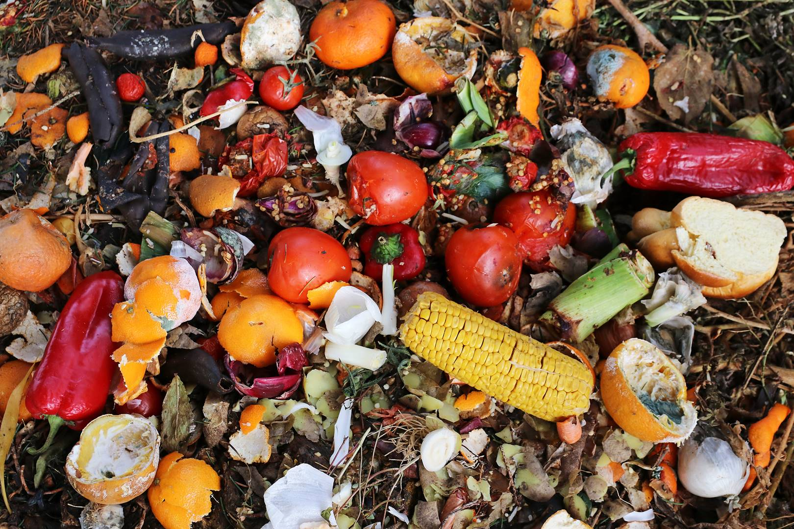
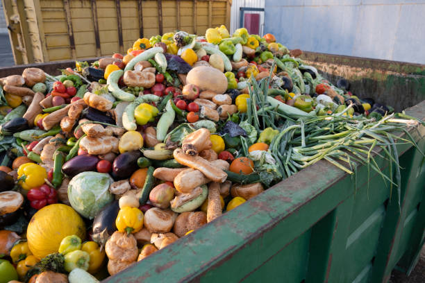
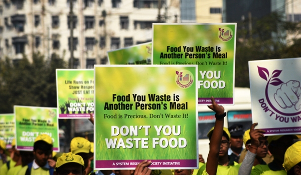
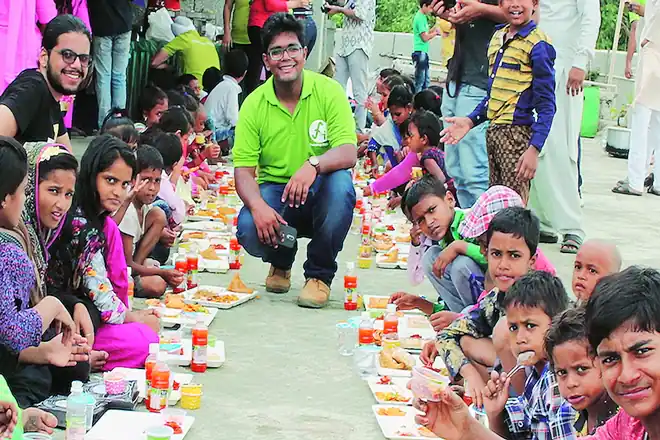

Food wastage refers to the loss or wastage of food at various stages of the food supply chain, from production and processing to distribution and consumption.
This wastage can occur for many reasons, including:
1) Production Losses 2) Processing and Distribution Losses 3) Market Imperfections 4) Consumer Behavior 5) Environmental Impact 6) Economic Loss 7) Social Implications
Below are few images from the hostel mess.


What is food waste management system?
A food waste management system refers to the processes, strategies, and infrastructure put in place to handle and minimize food waste at various stages of the food supply chain, from production to consumption.
Here, FoodHub comes into picture. We came up with an initiative to reduce the food wastage and hunger as much as possible with the goal of zero hunger and responsible consumption and production. We have our outlets in different parts of the country. We are in contact with some banquets. We collect the donated food and distribute it among the people who need it.
How can we manage food waste?
Here are few steps which we can follow in order to minimize food wastage:
1) Reduce food waste at home by buying only what you need, planning meals, and storing food properly.
2) Compost food scraps to create nutrient-rich soil for plants.
3) Donate extra food to food banks, shelters, and other organizations.
4) Recycle food packaging and containers.
5) Use leftovers creatively in new meals and recipes.
6) Contact your local government to find out what food waste programs are available in your area.
Solutions for food waste management in India:
1)Recycle by Composting: Food producers will solve 100% of their waste matter issues by merely organizing a good composting strategy. And doing therefore not solely eliminates waste, it saves you cash as a result of you don’t have to be compelled to “outsource” your compost production.
2)Turn Wasted Food into Animal Feed: Cultivating compost is a method to recycle food, however it also can be drained of the bellies of cows, sheep, pigs, and alternative ethereal (themselves destined to become food).
3)Use Waste Food to provide Products: From biofuels to liquid fertilizer, there are several helpful merchandises that may be factory-made from bound styles of waste foods, and infrequently “leftovers” of one company might be helpful in another business for the food scrap.
4)Source Reduction and Food Donation: The easiest method to curtail waste matter is to easily turn out less whenever production is clearly resulting in waste. Once excess foodstuffs are still safe to eat, there will be hungry and poor people who realize it troublesome to afford decent food in today’s dear economy.
Together We Can!
We are trying our best to solve the problem of food waste and its management. But we need help from your side as well. Apart from donating food, you can contribute much more towards the society.
Click here to view how much food was wasted globally in 2019.
We recommend you to actively participate in food waste awareness campaigns.
campaign had oorganized food waste awareness week.
Click here to view the details.
 
Newsletter
Subscribe to Get updates on events, volunteer opportunities and other news.